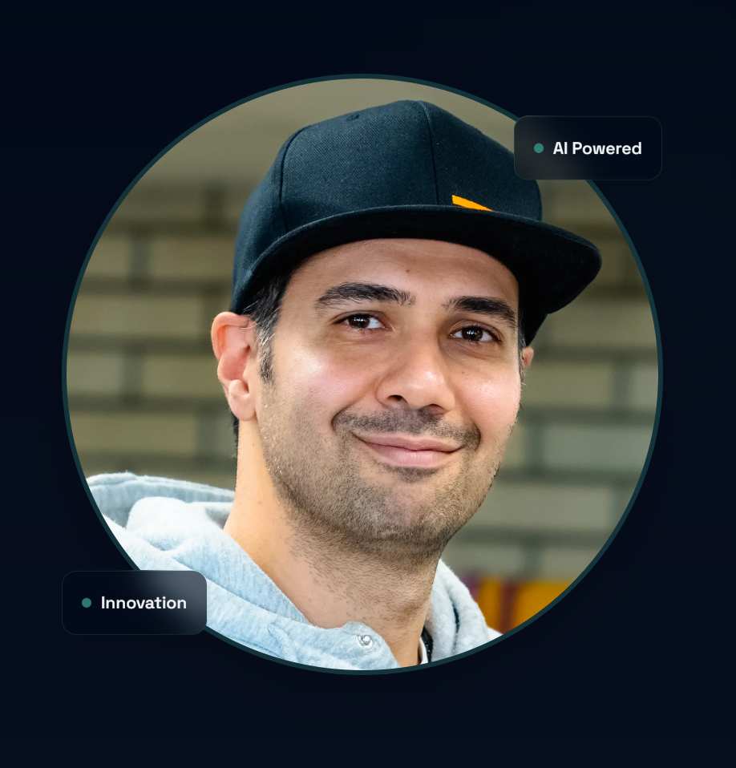
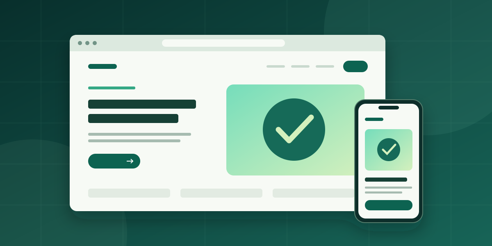
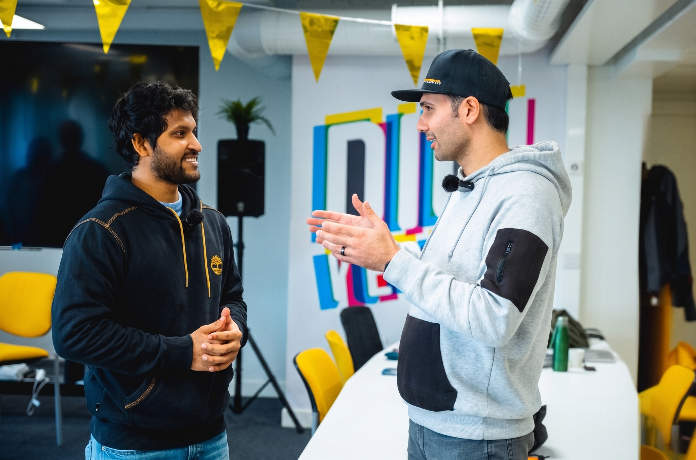
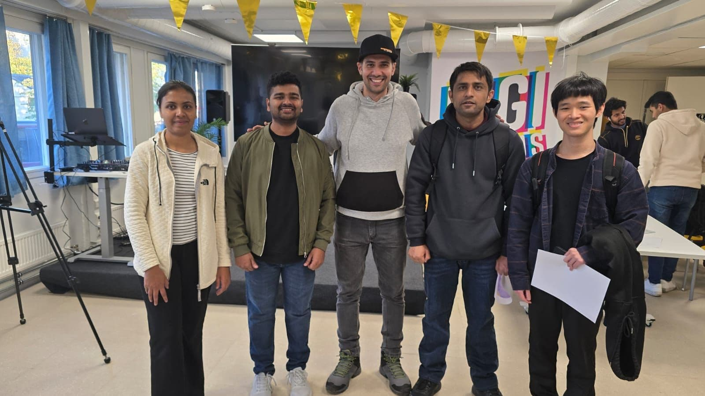

01 / ENGINEERING
Build thoughtfully.
Web applications, AI-assisted workflows and accessible interfaces shaped around real needs.
Based in Jyväskylä, Finland · Open to collaboration
I'm Ehsan Mohajer — a software developer, project specialist and entrepreneur turning complex challenges into practical digital solutions.

01 / THE APPROACH
I work at the intersection of software, business and people. My experience combines building digital products, coordinating projects and connecting teams around practical outcomes.
Web applications, AI-assisted workflows and accessible interfaces shaped around real needs.
From understanding requirements to prototypes, coordination, launch and improvement.
Partnerships, hackathons and mentoring that bring technical and nontechnical perspectives together.
02 / SELECTED WORK
Selected examples of projects and initiatives I have contributed to. My role and project status are stated clearly.
See selected projects ↗
I design and build websites for customers, helping businesses present their services and connect with their audience online.

Contributed to digital projects, tourism concepts, hackathons and collaboration with local businesses and students.
03 / MY JOURNEY
From arriving in Finland and learning a new language to studying software development, joining regional projects and starting a business. I share the decisions, people and lessons that shaped my path.
Explore My Story ↗
04 / PROFESSIONAL EXPERIENCE
My career spans software development, entrepreneurship, technical support and project coordination — experience that helps me approach challenges from more than one angle.
In October 2026, I started my entrepreneurial journey, opening a new chapter in my life.
Regional digital projects, hackathons, collaboration, mentoring and practical innovation activities in Central Finland.
Building connections with the startup, research, investor and innovation ecosystem.
Hands-on technology work, websites, sales, customer service and technical problem solving.
SPEAKING & MENTORING
As a mentor to students, I share practical lessons from my path to entrepreneurship: learning new skills, finding opportunities and taking the step to start a business.
Invite me to speak to your students, community or event audience about my journey and the lessons I have learned along the way.
Send me a request with your event details, audience, preferred date and budget. I will get back to you to discuss a suitable talk.
Speaking fees are negotiable based on your budget and the scope of the event.
Send a speaking request ↗SOLUTIONS FOR YOUR BUSINESS
Need a website, a digital tool or a smarter way to work? Hire me to develop a solution for your business, or explore my services at Tech Jyvä.
05 / LET'S CONNECT